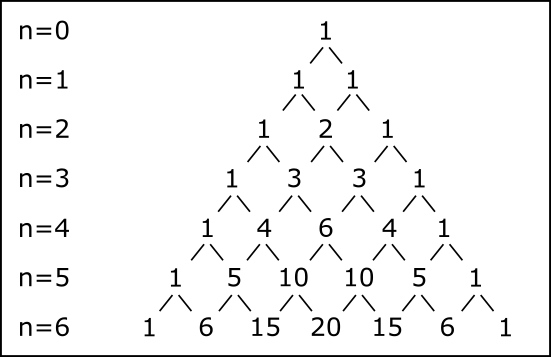

代数の世界観です。数学その他も参照のこと。
一行で言ってしまうと、数学とは、インターフェースを使った要素数の結合と、比較・比率・取り換えの法則性であると言えます。
まず、3+5=8という数式があったとします。
ここで、数学では、足し算や掛け算を行いますが、これはJavaのような「要素と要素を結合するインターフェース」であると考えられます。
そして、要素数とは、数の合計です。この数は、必ずしも単純な整数ではなく、内部に複雑なインターフェースと比較・比率・取り換えの原則を持ちます。
上の式で、要素数は「3」と「5」と「8」です。そしてインターフェースは、3と5の間にある「+」です。
そして、「=」は比較です。ここで「=」は3つの意味を持ちます。それは、「比較」と「比率」と「取り換え」です。
比較は、「インターフェースを入れ替える際の等値性」であり、比率は、「要素数を入れ替える際の等値性」であり、取り換えは「等値性が成り立つ際のインターフェースに基づく要素数の交換」です。
この状態で、さまざまな法則性を考える学問、それが数学です。その法則性は、「原理的な決まり事に基づいて等値性を成り立たせる」ということです。そして原理的な決まり事とは、「概念」にすぎません。
これらの関係は、高校数学から大学数学まで、どこまで行っても変わりません。iは要素数であり、Σはインターフェースであり、サインコサインは比率であり、関数や微積分は取り換えです。
僕は、数学は数量でも図形でも論理でもなく、「規則」だと思います。
たとえば、a < bという仮定とb < cという仮定があった時、a < cという関係が成り立ちます。
また、1の次は2であり、9の次は10であり、10から20, 30, 40と二桁目の数字を増やしていくと、10ごとに増えていきます。
数学とは、こうした「規則」を考える学問です。自然科学とも社会科学とも人文科学とも違う「形式科学」です。僕は、こうした数学的な「規則」を知ることで、数学は自分で一から自分の力で考えられると思います。これは、学校に行く以前の幼児の考え方に近いもので、学校に行くと失われてしまいます。
自分の書いたブログ「わたしの名はフレイ」2020/09/18より。
僕は、数学について考えることにした。
代数とは、四則演算と等値を代数的に考えるものであり、要するに「\(x = y + 1\)であれば\(y = x - 1\)」と考えることである。
そして、平方根とは平方面積における根のことであり、\(100=10^2\)、\(81=9^2\)、\(64=8^2\)、\(49=7^2\)であり、\(\sqrt{2}\)は同様に2乗して2になる「2の根」である。
同時に、3×3が9になる、ということは、オセロや将棋盤のように同じ数でチェックのマス目を作った時に、ひとつの行の並びが3で、列の並びも3であれば、全部のマスの数は9になる、ということである。
また、変数とは「どんな数でも入る数」であり、この数を文字にするということは「数の関係と構造を考えること」であり、掛け算や割り算は本質的に「単位」あるいは「数の個数」である。
この変数の構造を順列的に、「ある一定の数の関係性と構造を決めてその値が規則的に作られること」が解析学における関数である。
一次関数と二次関数にある違いは、「同じ数が複数回掛けられること」であり、すなわち、\(y = 2x + 1\)においてはxは一度しか使われないが、\(y = 2x^2 + 1\)においてはxは二度も使われる、という「xが複数回掛けられる」（式の中で複数回使われる）ということであり、実際は一次のxと二次の\(x^2\)が使われることがあるため、二次関数においてxが使われるのは3回である。
ピタゴラスの時代に戻るわけではないが、僕はデカルト以後の数学的表記をもっと多様で自由なものにしても良いと思う。
a,b,cからx,y,zを移項と分配法則などの算法によって考える代数学は、定理と証明という意味では優れているのだが、もっとそれぞれが多様な表記法を考え出してはどうだろうか。
それから、1+1=2を「一足す一は二」と口に出して言う読み方にも僕は疑問を提示出来ると思う。「は」ではなく、「で」の方が正しいのではないか。1+1=2の関係が成り立つからといって、決して2が必ず1+1になるわけでもない。もう少し違ったイコールなどの記号の使い方や読み方（あるいは、新しいイコールを作っても良いだろう。数学だけではなく、言語学にも新しい「は」を作ることも考えられる。ドイツ語に新しい条件的なderを作っても皆違和感なく取り入れるだろう。エスペラントに作っても良いかもしれない。）を考えても、僕は良いと思う。
ベクトルや行列について僕は詳しくは無いが、方向と作用をベースとして行列の計算を行うなら、僕は公理主義のように「部品を成り立たせること」から機械のような積み重ねの数学を考えられると思う。コンピュータのように考えても良いかもしれない。
また、分数などの数の種類については、もう少し日々の生活に分数のようなスマートな数をあてはめても良いだろう。時計の数の読み方などは、60進法と12進法を合わせて使っているが、こういうところで分数を使うことも、新しい文明として考えられるかもしれない。
ただ、僕は、今の解析学をある意味で創始したデカルトには一定の敬意を表したい。二次関数や三角関数などの関数をグラフに表現する際に、僕たちは何気なくデカルト座標系を使っているし、代数によって数と式を表現し証明する際にも、僕らは何気なく代数学的表記法を使っている。今の中等・高等教育で教えられることの45%は、僕はデカルトだと思う。デカルトは素晴らしい哲学者だが、むしろ、哲学の功績の方が、さまざまな哲学的な学生から批判されている。やはり、デカルトは数学者なのだと僕は思う。
むしろ、デカルトやニュートンが嫌われる理由はそこにあって、あまりにデカルトとニュートンしか教えないせいで、数学が馬鹿になったような印象を受ける人間も多い。もっと賢い数学が他にあるのに、なぜか教えない。高校生みんなを馬鹿にしているように見えてしまう。
おふざけが過ぎるかもしれないが、kannとderを組み合わせてkannerとし、それを「かなあ」にすると面白いかもしれない。
日本語では、「です」や「だ」の代りに「だよね」とか「なのよ」などと言ったりするが、それは僕と同じ発想をしている。やはり、derにはさまざまな言い方があるべきだ。
本当は、それが出来ると、むしろ、もっと面白いことが出来る。「だからして」とか「よって」のような、数学的な論理学をきっと作れる。
あとは、僕はブルバキと言う数学者のグループが好きだったことがある。好きだっただけで、何をしていたかなどは詳しくは知らない。構造主義という考え方の下で、おそらく集合と論理のような何かを作っていた。もう覚えていない。だが、僕はデカルトとニュートンにブルバキをいくらか加えると、見事に今の数学体系が作り出せると思う。
本当は、昔の僕がブルバキと良く似たことをしている。デカルトとニュートンの考え方をベースに、集合論から数学体系を作っていた。
デカルトやニュートンとアインシュタインも参照のこと。
まず、代数の考え方。
数学の方程式は、「その答えが一つに定まる場合に、その答えを求める」という考え方だ。
たとえば、\(x+3=5\)と言う場合に、\(x=2\)という答えが定まる。\(x\)だけでは答えは定まらないが、\(+3=5\)という式が\(=2\)という式と同じことを意味する。
だから、ある意味、なぞなぞやクイズのような考え方だ。
こうして、答えが一つに定まるという考え方から、未知数\(x\)が必ず一つに定まるという前提の下に、必要な論理的材料を分析することになる。
また、答えが一つに定まらない場合でも、「関係」を考えることができる。\(x+y=4\)という式があれば、\(x=4-y\)という関係を考えられる。
証明とは、「その答えがなぜ、どのようにしてその答えになることが分かるのか」ということを説明する、という考え方だ。
ある意味、数学とは言語を使ったゲームのようなものに近い。一つの答えが定まると分かっている時に、その答えが何なのかを求める。答えが何なのか、ということよりも、いつどのような場合に答えが一つに定まるのか、ということを知っていることが大切だ。
数学（２．初等数学）も参照のこと。
また、式は未知数を求める方程式だけではなく、数の関係性と法則性を考える「関数」と呼ばれるものもある。
物理学での公式である、\(e=mc^2\)などがそれに当たる。
先ほどの関係を考える方程式と良く似ているが、一次関数のグラフである\(y=2x\)なども関数である。
ここでは、「何か一つの変数の値が定まれば、別の変数の値が定まる」という考え方をする。
一次関数や二次関数をそのままグラフにすることも出来る。これは、微分積分のようなものへと発展する。それを解析学と言う。
幾何学は、「形として目に見えるものの法則」を考える。関数との違いは、目に見える図形的な特徴から法則性を考えることだ。
もちろん、\(y=2x\)のような関数をグラフにすることも出来るが、多くの場合「点」「直線」「平面」「四角形」「三角形」「円」「立方体」などのような、図形的特徴から法則性を考える。
数学的な考え方の一つとして、「公理主義」が言える。これは、「最も少ない公理から始めて、その公理から成り立つことが『推論的に』言えることのみから、全ての定理を証明する」というものだ。
そして、数学的な論理がいつ、どのように成り立つか、ということを研究する中で、「仮定と成立」が存在する。ある仮定が成り立つ時、別のどんな仮定が成り立つか、ということを言う。
これはプログラミングのようなものだ。簡単に言葉で説明することは難しいが、「一つの論理的整合性が成り立つならば、別の論理が必ず成り立つ」という、論理学の世界である。
たとえば、\(x \gt 3\)で\(y \gt 4\)ならば\(x+y \gt 7\)といった式が分かりやすいだろう。
本当は、数学とは数の遊びである。等しいというよりは、どれだけ差があるか、ということをベースに、割ってみたり、表記を変えてみたり、分配される関係を考えてみたりする中で、「どこでどのような法則が見つけられるのか」ということを「遊びの中で見つける」という学問である。
基本的に、数はイコールで結ばれる。4=3+1といった具合である。だが、これはただ単純に「同じ」であることを言いたいわけではない。言ってしまえば、この式は4が3よりも1小さいことを示している。数学とは、このような「どういう風にすれば、差が求められるのか」ということを言いたいだけであって、僕が思うに重要なのはイコールよりもマイナス（プラスマイナス）である。
ある意味、その上で掛けたり割ったりするのは、単純に数を「組み替えている」だけであり、同時に「カウントしている」だけである。よって、掛け算や割り算は、数の数、数の数の数、数の数の数の数…といったように無限に数の次元を増やしていくことに過ぎない。
無限次元とマイナスが分かってしまえば、それらを使う必要がないことが分かる。数は単純にある値であって、それはわざわざ四則演算を考える必要はない。あとに存在するものは、プラスマイナスだけである。そして、イコールとはプラスマイナスの表現形式に過ぎないのである。
プラスマイナスの先にあるものは、あらゆる操作方法であって、これはマクロに過ぎない。だが、マクロであると同時に、存在すべき数をどのように存在させるか、という考え方が生まれてくる。全て、「存在すべきであると仮定する」ことから、新しい「組み替え方式」を生んでいくのである。
よって、言えるのは、数学とは絶対的な数の値の位置を、組み替える方式の中で関係性として生んでいくものである。僕は、これこそ、算術的代数の基本であると思う。
だが、これはひとつ、「正しい方法論」ということが分かっていない。数学は、証明の中で正しい方法論で考えていくことで、関係性を掴んで、同じものから実証し、解明し、正しいことを証明する。だが、僕はこれはプラスマイナス論で簡単に述べられると思う。イコールで証明する今の数学のスタイルは、美しくない。数学的関係性から、差と絶対的な位置において、その場所とその場所が正しくその場所に存在するならば、それが組み替え方式によって正しいことを証明する、という証明のスタイルの方が僕は美しいと思う。そこでは、証明にイコールは使わない。もっとイコールを発展させた、「差の一致不等号」を使う必要がある。
差の一致不等号によって、数学は絶対的かつ美しいものになる。たとえば、1+3=4であることを、1<3=4のように書く。移項や掛け算は使わない。全て、絶対的な「位置に対する位置のズレ」で計算し、掛け算は「数の中にある組み替え方式」として、数の中に存在する関数的な式になる。たとえば、2ab=cであれば、A(=2ab)=C(=c)のように書けば良いだろう。この数学は、イコールを使う今までの数学とは全く違うスタイルでの証明と論述を可能とするだろう。
この数学の賢い点は二つ。それは、「イコールもかけ算も使わない」こと、そして、「絶対的な場所と場所の関係から、証明と宇宙の全ての秩序を明晰に、全貌を把握することができる」ことだ。
素数とは、その数と1以外で割り切れない、1以外の数のこと。最小の素数は2。
素数以外の整数（合成数）は、必ずなんらかの素数の組み合わせの積によって分解できる。整数を素数の積として表現する方法を「素因数分解」と呼ぶ。素因数分解を行うには、素数になるまでその数をひとつひとつ素数で割り続ければいい。たとえば24を素因数分解すると\(2^3 \times 3\)となる。
素数を見つけるためには、「エラトステネスのふるい」という方法を使う。紙に1から始めて1ずつ増えていく整数のリストを並べて、まず1を消し、次に素数2を残して2の倍数をすべて消す。次に素数3を残して3の倍数をすべて消す。4は2の倍数であるため既に消えているため、今度は素数5を残して5の倍数をすべて消す。これを最後まで行うことで、リストの中のすべての素数を見つけ出すことができる。
このほか、二つの自然数の最大公約数を求めるアルゴリズムとして、「ユークリッドの互除法」が有名。aをbで割って余りをrとした時、aとbの最大公約数はbとrの最大公約数に等しい。なので、aからbを割って余りをrとし、bをrで割ってさらに余りをr1とし、さらにrをr1で割って余りをr2とし、最終的に余りが0になるまで繰り返す。アルゴリズムの勉強としてちょうどよく、大学の数学でよく教えられる。
2025.06.24
二項展開において、
\[ \begin{eqnarray} (a+b)^2 &=& a^2 + 2ab + b^2 \\ (a+b)^3 &=& a^3 + 3a^2 b + 3ab^2 + b^3 \\ (a+b)^4 &=& a^4 + 4a^3 b + 6a^2 b^2 + 4ab^3 + b^4 \\ (a+b)^5 &=& a^5 + 5a^4 b + 10a^3 b^2 + 10a^2 b^3 + 5ab^4 + b^5 \\ (a+b)^6 &=& a^6 + 6a^5 b + 15a^4 b^2 + 20a^3 b^3 + 15a^2 b^4 + 6ab^5 + b^6 \\ \vdots \end{eqnarray} \]
となる。これを図式にすると、
となる。これを「パスカルの三角形」と呼ぶ。
（オイラーの贈物を参考に執筆・引用しました。）
パスカルも参照のこと。
2024.02.10
二次方程式\(ax^2 + bx + c = 0\)の解法は、解の公式、
\[x = \frac{ -b \pm \sqrt{b^2 - 4ac}}{2a}\]
によって解（根）を求められる。
三次方程式の代数的解法はタルタリア・カルダノにより発見され、四次方程式の場合はカルダノの弟子であるフェラーリによって代数的解法が発見された。
だが、アーベルによって五次方程式以上の代数的解法はないことが証明された。そして、アーベルとガロアによる方程式の研究から「群論」が築かれた。
（オイラーの贈物を参考に執筆・引用しました。）
2024.02.21
2024.02.24編集
群論は、二つの「何か」から新しい「何か」が作られる、すなわち「演算」と結合法則（と単位元と逆元の存在）が成り立つ場合に、「単位元」（加法で言えば0、乗法で言えば1）と「逆元」（加法なら3に対して-3、乗法なら2に対して\(\frac{1}{2}\)）の考え方を用いて、「どんな演算であっても抽象的に考えてしまおう」といった考え方。
これを使うことで、加法や乗法を区別する必要はなくなる。また、一般的な四則演算だけではなく、どんな演算（と呼ぶことのできるもの）についても、抽象的に定理とその証明を作ることができる。
2024.12.24編集
集合Sに対して二項演算が行われる時、
１．任意の元a, b, cに対して結合法則が成り立つ。(a • b) • c = a • (b • c)
２．単位元eが存在する。e • a = a • e = a
３．aに対する逆元dが存在する。a • d = d • a = e
１のみの場合を半群、１・２の場合をモノイド、１・２・３の場合を群と言う。
2024.12.24編集
群とは、加法（と逆元により減法）のみの一演算ができる代数系のこと。環とは、加法と乗法の二演算ができる代数系のこと。体とは、四則演算（すなわち環に加えて商の計算も）ができる代数系のこと。
自然数は負の数が使えない（逆元がない）ため、減法に制限がある（結果がマイナスになる減法ができない）ので群ではない。整数は加法・乗法ができるため環ではあるが、割り算をした時に余りが出るので体ではない。有理数は体。数のほかにも行列、多項式、関数などについて考えられる。
2024.12.24
2024.12.28編集
圏論は集合の応用的なバージョンで、単に集合の用語を使って説明するのではなく、「対象」と「射」、すなわち矢印を用いて数学的な思考を整理することができる表現方法。
ものとものの「関係性」に注目し、何かが何かに対する矢印としての「作用」であると考えることから、圏論の考え方に至る。
xが集合Aに含まれている時、\(x \in A\)と書く。
\(x \in A \Rightarrow x \in B\)の時、\(A \subset B\)。この時、「集合Aは集合Bに含まれる」と言う。これは集合Aの要素が集合Bの要素としてすべて含まれる（集合Aは集合Bの部分集合である）ことを意味する。
集合に属す条件は\(\varphi(x)\)や\(\phi(x)\)で表し、次のように書く。
\[ A=\{\ x \ | \ \varphi(x) \ \}\\ B=\{\ x \ | \ \phi(x) \ \} \]
\(A \cup B\)は和集合で、「または」（集合の要素に対するOR）を表す。\(A \cap B\)は積集合で、「かつ」（集合の要素に対するAND）を表す。
\[ A \cup B=\{\ x \ | \ x \in A \ または \ x \in B \ \}\\ A \cap B=\{\ x \ | \ x \in A \ かつ \ x \in B \ \} \]
あるいは、2つの条件\(\varphi(x)\)と\(\phi(x)\)に対して、\(\lor\)を「または」（条件や命題に対するOR）、\(\land\)を「かつ」（条件や命題に対するAND）とし、以下のように表す。
\[ A \cup B=\{\ x \ | \ \varphi(x) \lor \phi(x) \ \}\\ A \cap B=\{\ x \ | \ \varphi(x) \land \phi(x) \ \} \]
ここで、\(A \subset B\)だった時、「xが\(\varphi(x)\)を満たすならばxは\(\phi(x)\)を満たす」という関係性が成り立つ。このような条件を「十分条件」と呼ぶ。
補集合は\(\overline{ A }\)で「Aには属さない要素による集合」という意味。\(\Omega\)は全体集合を意味する。
\[ \overline{ A }=\{\ x \ | \ x \notin A, \ x \in \Omega \ \} \]
以下は、ド・モルガンの法則。
\[ \overline{ (A\cap B) } = \overline{ A } \cup \overline{ B }, \quad \overline{ (A\cup B) } = \overline{ A } \cap \overline{ B } \]
ド・モルガンの法則は、集合論だけではなくブール代数などでも成り立つ「コンピュータ科学の基礎」です。
（集合の概念 - 青空学園数学科を参考に執筆・引用しました。）
2024.02.22
2024.07.20-21編集
2024.08.30編集
2026.02.17編集
等式である=は見慣れているが、合同式は三つの線で表す。
\[ n_1 \equiv n_2 \pmod m \]
この式は、\(n_1 - n_2\)がmの倍数であるということ（n1, n2, mはいずれも整数）を表し、「mを法としてn1はn2と合同である」と言う。
合同式の例は、たとえば時計。時計は12時間ごとに0へと戻るため、2時と14時は同じ針の場所となる。これを「12を法として2と14は合同である」という言い方をする。
（以上は「現代数学への入門 代数入門 （上野健爾 岩波書店）」を参考に執筆しました。）
2024.07.20-21
証明とは、その定理が数学的に正しいことを示す、一連の推論的説明のこと。仮説を証明した段階で、仮説は定理となる。
数学的な証明には、
| 方法 | 説明 |
|---|---|
| 仮定と結論 | 2つの命題pとqがあり、「pならばq」の時、pを「仮定」、qを「結論」と呼び、\(p \to q\)または\(p \Rightarrow q\)で表す。 |
| 逆 | \(p \to q\)の時、pとqを入れ替えて\(q \to p\)とした時、これを「逆」と呼ぶ。 |
| 同値 | \((p \to q) \land (q \to p)\)の時、これを「同値」と呼び、\(p \iff q\)で表す。 |
| 三段論法 | pが真であることが分かっていて、qが真であることを証明したい時、pならばqが成立することを示す証明の方法。 これを論理学においては以下のような図で表す。 \[\frac{p, p \to q}{q}\] |
| 三段論法の否定形 | \(p \to q\)の証明が成立する時に、qの否定によってpもまた否定されることを示す方法。 \[\frac{p \to q, \lnot q}{\lnot p}\] |
| 対偶 | \(p \to q\)を証明するために、pとは別のもうひとつの証明である、qの否定を仮定した上でのpの否定の証明によって、pの証明を示す方法。 \(\lnot q \to \lnot p\)を\(p \to q\)の「対偶」と呼ぶ。 \[\frac{\lnot q \to \lnot p}{p \to q}\] |
| 背理法 | pを証明するためにpの否定を仮定し、矛盾を使うことで証明する方法。 \[\frac{(\lnot p) \to (q \land (\lnot q))}{p}\] |
| 場合分け | それぞれの場合に分けて証明をする方法。 \[\frac{p \lor q, p \to r, q \to r}{r}\] |
| 数学的帰納法 | P(1)を証明し、P(n-1)が真であればP(n)も真であることを証明することで、任意の自然数nについてP(n)を真であると証明する方法。 |
などがある。
（「現代数学への入門 幾何入門 （砂田利一 岩波書店）」を参考に執筆・引用しました。）
2024.08.30
2024.09.01編集